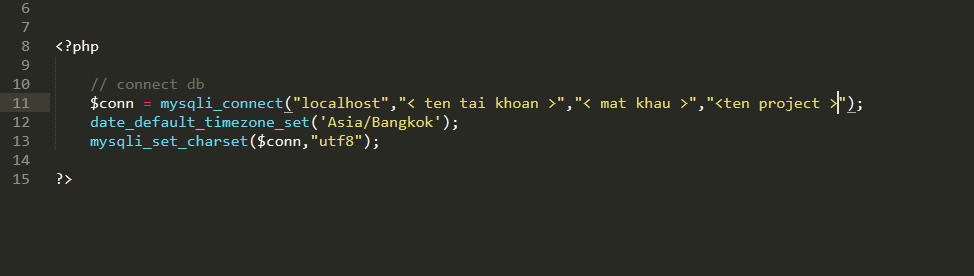
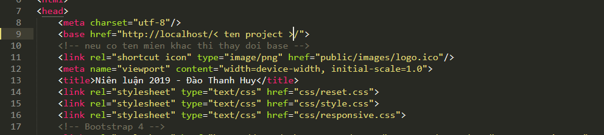
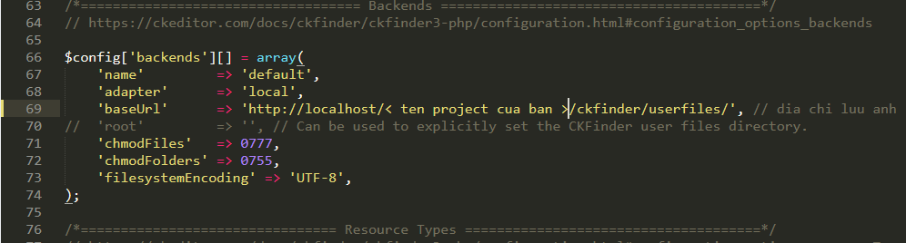
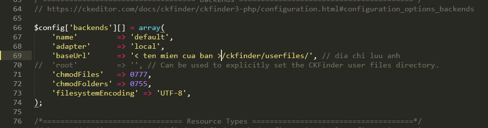

Copy (tên project) vào host thật (đã có tên miền) hoặc copy vào htdocs của xampp (nếu chạy máy ảo)
Bạn vào cơ sở dữ liệu trên host sau đó import file cở sở dữ liệu trong thư mục (tên project)/database.sql
Bạn mở file config.php theo đường dẫn (tên project)/admin/pages/modules/config.php 
Bạn truyền vào đúng 4 tham số trong hàm mysqli_connect để thực hiện kết nối cơ sở dữ liệu
Sau khi kết nối cơ sở dữ liệu thành công mà giao diện bị lỗi thì bạn sẽ vào để cấu hình lại thẻ base chạy cho toàn bộ project
Để cấu hình bạn mở file header.php trong đường dẫn: (tên project)/includes/header.php

Lưu ý: Nếu bạn chạy trên host ảo thì đặt đường dẫn host ảo giống như trên. Nếu bạn sử dụng host thật và có tên miền thì nhập tên miền vào
Nếu nội dung các bài viết cũng như sản phẩm bị mất hình ảnh thì bạn vui lòng cấu hình lại đường dẫn trong file config.php của ckfinder theo đường dẫn:
(tên project)/admin/pages/ckfinder/config.php
Nếu bạn chạy trên host ảo thì sẽ sửa baseUrl như thế này:

Nếu bạn chạy trên host thật và có tên miền thì sẽ sửa baseUrl như thế này:
